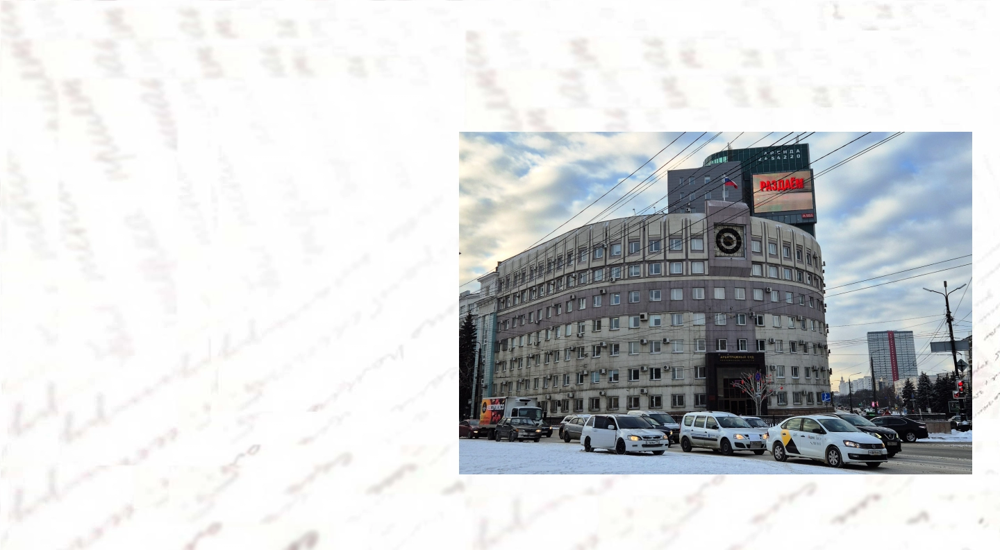
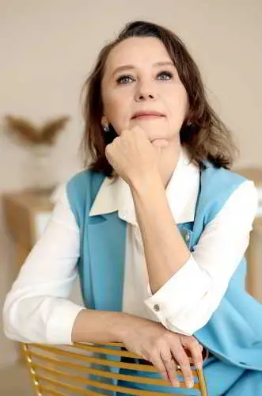
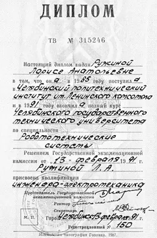
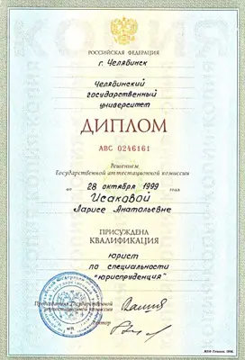
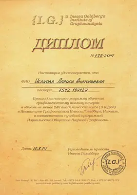
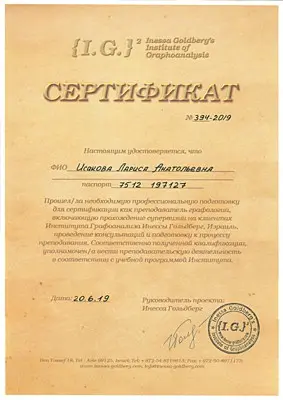
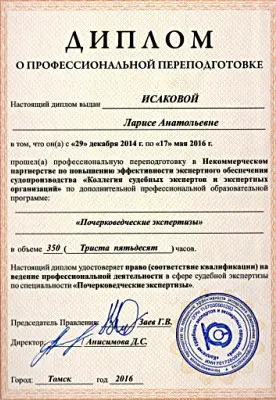
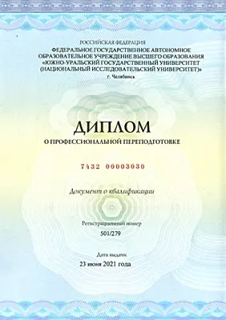

- С 1991 по 1996 работала по полученной специальности, в том числе программистом, ведущим программистом;
- С 1996 по 1999 она работала заместителем руководителя по юридическим и экономическим вопросам;

- С 1999 продолжила работу в должностях заместителя генерального директора Челябинского завода технологической оснастки по юридическим и экономическим вопросам;
- С 2003 работала в должности заместителя генерального директора Челябинского завода технологической оснастки по финансовым вопросам, начальником службы экономической безопасности;
- С 2005 работала в должности финансового директора Челябинского завода технологической оснастки;
- С 2007 по 2022 работала в должности директора юридической фирмы ООО УПО «ГРИН»;


- В 2014 получила диплом, подтверждающий прохождение трех курсов Института Графоанализа;
- С 2014 по 2022 углубленно изучала графологию по зарубежным и Российским источникам, практиковала работу с людьми, активно собирала базу данных почерков лиц разных возрастов, разных языковых и социальных групп;

- В 2019 получила сертификат, подтверждающий успешное окончание преподавательских курсов Института Графоанализа;

- Знания графологии, психологии очень помогают, так как принадлежность письменного документа тому или иному лицу лучше оценивается с точки зрения психологических особенностей;
- Преподает курс Графологического анализа в Челябинском институте психоанализа;
- Как эксперт-почерковед исследует почерковые объекты по договорам с заказчиками, а также по определениям Верховного Суда, арбитражного и гражданского суда;
- В настоящее время кроме экспертной деятельности активно занимается юридической деятельностью по договорам с индивидуальными предпринимателями и юридическими лицами.